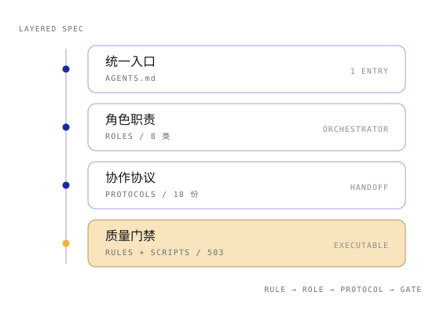
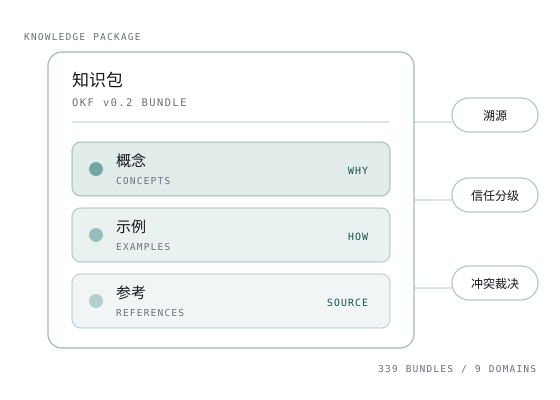
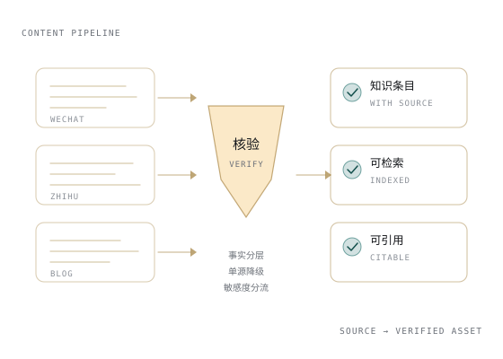
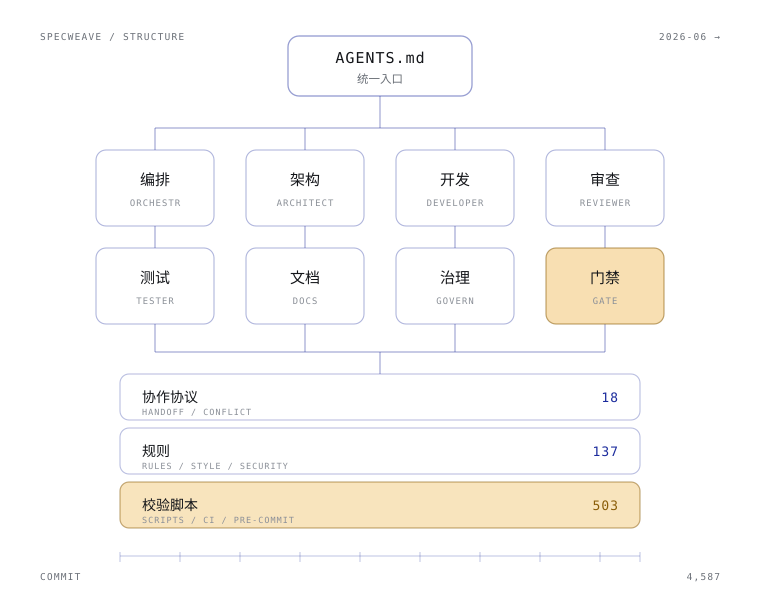
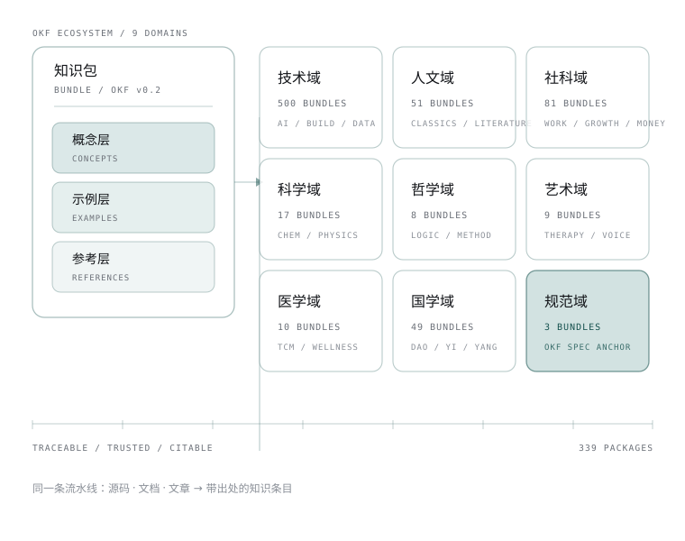
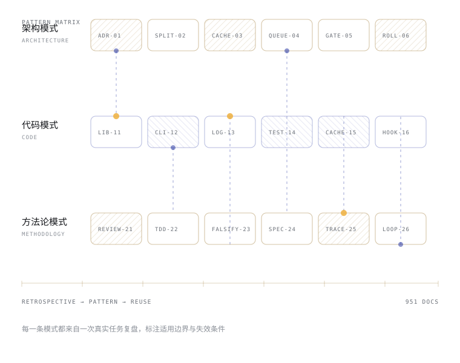
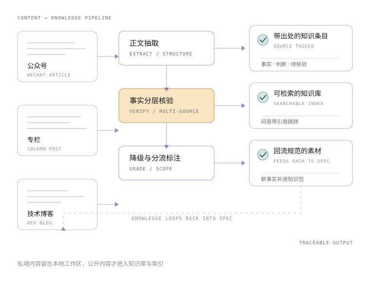
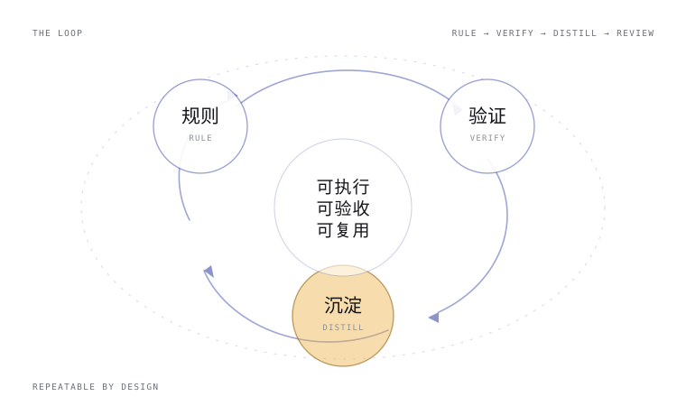

01 / AI 工程 · SPEC
把「让 AI 干活」写成人和机器都能执行、都能验收的规则。
统一入口、角色职责、协作协议、质量门禁与自我演进机制，构成一套可被任意 AI 工具装载的工作区规范体系。
- 规范体系
- 多智能体协作
- 自动化门禁
SpecWeave4,587 commits · 8 类角色 · 18 份协议
AI 工程 · 知识工程 · 内容创作
我是道一。长期做三件事：把 AI 协作写成规范，把信息写成可溯源的知识包，把公开内容写成可复用的知识资产——三条线用同一套方法：先定规则，再验证，最后沉淀。
WORKING NOTE / 01规则先于能力：把「谁做什么、做到什么算完」写清楚，AI 才可能稳定地产出。

PROTOCOL / ROLE MAP同一套方法，三条并行的实践线：把复杂现实拆成可验证的结构，再把结论沉淀成能被复用的资产。

01 / AI 工程 · SPEC
统一入口、角色职责、协作协议、质量门禁与自我演进机制，构成一套可被任意 AI 工具装载的工作区规范体系。
SpecWeave4,587 commits · 8 类角色 · 18 份协议

02 / 知识工程 · KNOWLEDGE
以 OKF v0.2 组织知识：概念 / 示例 / 参考三层结构，每条事实带信源、置信度与冲突裁决依据。
awesome-okf-xs339 知识包 · 9 大域 · OKF v0.2

03 / 内容创作 · CONTENT
公众号、专栏与技术博客进入同一条流水线：正文抽取、事实分层核验、敏感度分流，输出可引用、可回溯的结构化资产。
Content → Knowledge微信 · 知乎 · 博客 · 溯源标注
四个还在生长的项目：一个体系、一套格式、一座模式库、一条流水线。
01 / 开源基础设施
一套给 AI 助手的「员工手册」——统一入口、角色职责、协作协议、质量门禁，让多个智能体像真正的团队一样协作。
关键判断规范不是写给人看的说明书，而是写给 AI 执行的运行时。

02 / 知识工程
以 Open Knowledge Format v0.2 组织知识：概念 / 示例 / 参考三层结构，每条事实带信源与信任标记，冲突有裁决依据。
关键判断能被检索不等于可信；信任要靠溯源与分级给出来。

03 / 知识沉淀
从一次次真实任务复盘中抽出架构、代码与方法论三类模式，让下一个项目直接复用，而不是重新踩一遍。
关键判断模式的价值不在通用，而在于标明它在什么条件下仍然成立。

04 / 内容工程
公开内容进入同一条流水线：正文抽取、事实分层核验、单源降级标注，最终输出能带出处跳转的知识条目。
关键判断内容转知识的瓶颈不在抽取，而在事实分层与降级标注。

工作方式 / 01—03
规范体系、知识包与内容流水线，本质是同一件事：让复杂的东西变得可执行、可追溯、可复用。

RULE / VERIFY / DISTILL六项长期打磨的能力，四段持续推进的经历——都指向同一件事：把重复劳动交给规则。
01规范体系设计
从「做规范」到「规范能跑起来」，需要入口、职责、交接与验收四条线同时闭环。
常见产出规范体系 / 角色手册
02知识工程
知识不只要被找到，还要能被相信：每条事实带出处，冲突有裁决，单源必须降级标注。
常见产出知识包 / 知识库
03自动化门禁
不靠人记得检查。规则写成脚本，提交前与 CI 自动拦截，标准才不会随人手忙而松动。
常见产出校验脚本 / 门禁流水线
04文档与信息架构
文档不是事后补的说明书，而是系统的一部分：结构先行，术语统一，入口唯一。
常见产出文档中心 / 术语与导航
05内容转化
抽取正文只是开始：分层核验事实、标注单源与冲突，再改写成能被检索和引用的条目。
常见产出知识条目 / 溯源文档
06开源协作治理
项目要活得久，需要维护者机制、破坏性变更策略和 Bus Factor 目标，而不是靠某个人一直在线。
常见产出协作协议 / 治理文档
经历 / 2026
2026-06
写下第一份 AGENTS.md，确定方向：让多个 AI 像真正的团队一样协作，而不是互相踩文件。
2026-07
角色、协议、规则与脚本分层落地，复盘机制同时建立，踩过的坑开始变成可复用的模式。
2026-08
OKF 知识包体系成型，公开内容开始进入流水线，转成带信源与信任标记的知识条目。
2026-10
多智能体协作、知识库问答与内容流水线并行推进，规范体系开始被更多团队装载与二次开发。
四步循环，不依赖灵感的四步循环。
先把「谁负责什么、按什么顺序做、做到什么算完」写下来。规则先行，是为了让后续所有动作都有依据。
把关键路径做成可执行、可检查的东西。脚本能跑、门禁能拦，才算真的成立。
结论要留下出处、版本与边界。今天的判断，明天能被引用，也能被推翻。
每次任务结束都问一次：这次有没有可以被复用的部分？没有的话，值不值得造一个。
关于我 / 道一
我在做什么
三条线其实是同一件事的三种难度：AI 工程把协作写进规则，知识工程把信息写进结构，内容创作把表达写进可复用的资产。
我怎么看
事实优先于观点，单源必须降级标注，可复用的部分值得多花三倍时间——包括把一件事留给别人接手的能力。
现在在做
目前以独立开发者与开源维护者的身份推进 SpecWeave、OKF 知识生态与内容流水线，接受项目咨询、技术交流与共建邀请。